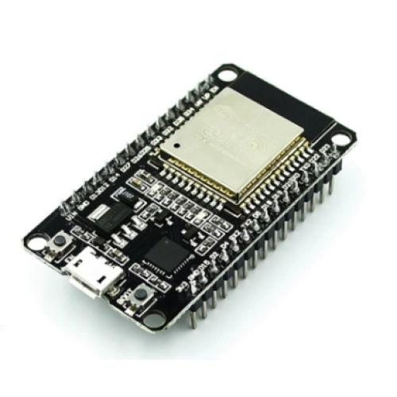
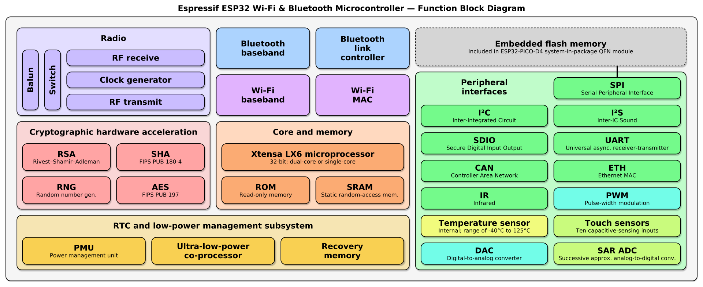
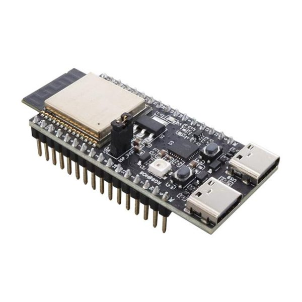

ESP32
ESP32 es un único chip combinado de Wi-Fi y Bluetooth de 2.4 GHz, diseñado con la tecnología de bajo consumo de 40 nm de TSMC. Está diseñado para lograr el mejor rendimiento en cuanto a consumo de energía y radiofrecuencia (RF), mostrando solidez, versatilidad y fiabilidad en una amplia variedad de aplicaciones y escenarios de consumo energético.

Con su bajo consumo de energía, el ESP32 es una opción ideal para dispositivos IoT en las siguientes áreas:
-
Hogar inteligente
-
Automatización industrial
-
Cuidado de la salud
-
Electrónica de consumo
-
Agricultura inteligente
-
Máquinas POS
-
Robots de servicio
-
Dispositivos de audio
-
Concentradores de sensores IoT de bajo consumo genéricos
-
Registradores de datos IoT de bajo consumo genéricos
-
Cámaras para transmisión de video
-
Reconocimiento de voz
-
Reconocimiento de imágenes
-
Tarjeta de red SDIO Wi-Fi + Bluetooth
Si has trabajado con Arduino y con las placas basadas en ESP8266, la ESP32 es muy similar. Es una placa con microcontrolador muchísimo más poderosa que Arduino y se puede programar con el mismo IDE de Arduino.

Características Principales
-
Microcontrolador Tensilica LX6 de doble núcleo a 240 MHz con 600 DMIPS
-
SRAM integrada de 520 KB
-
Transceptor Wi-Fi 802.11 b/g/n HT40 integrado, con banda base, pila y LwIP
-
Bluetooth de modo dual integrado (clásico y BLE)
-
Memoria flash de 4 MB, mapeada a la memoria de código de la CPU
-
Voltaje de operación de 2.3V a 3.6V
-
Temperatura de operación de -40°C a +125°C
ESP32-DevKit
La placa de desarrollo ESP32-C6-DevKit Dual Tipo C es una solución avanzada y versátil para el desarrollo de aplicaciones IoT y dispositivos conectados. Basada en el microcontrolador ESP32-C6 de Espressif Systems, esta placa ofrece una serie de mejoras en conectividad y rendimiento, haciéndola ideal para una amplia gama de aplicaciones desde sistemas de monitoreo remoto hasta soluciones industriales y de hogar inteligente.

Características Destacadas
-
Microcontrolador Avanzado: Equipado con el ESP32-C6, esta placa proporciona un rendimiento mejorado y capacidades ampliadas en comparación con las versiones anteriores de la serie ESP32.
-
Conectividad Superior: Ofrece conectividad mejorada con Bluetooth Low Energy (BLE) 5.0 y soporte para el protocolo IEEE 802.11ax, lo que asegura una comunicación eficiente y de alta velocidad. También es compatible con los protocolos IEEE 802.11b/g/n en anchos de banda de 20 MHz y 40 MHz, alcanzando velocidades de datos de hasta 150 Mbps.
-
Memoria y Almacenamiento: Con 4 MB de memoria FLASH, 320 KB de ROM, 512 KB de HP SRAM, y 16 KB de LP SRAM, la placa proporciona suficiente capacidad para ejecutar aplicaciones complejas y almacenar datos de manera eficiente.
-
Versatilidad en Puertos: Dispone de 32 GPIO, 3 SPI, 2 UART, 1 I2C, y 1 ADC, ofreciendo una amplia gama de opciones para conectar y controlar periféricos y sensores.
-
Diseño Robusto: Con una temperatura de funcionamiento de -40 ℃ a 85 ℃, la placa está diseñada para operar en condiciones ambientales extremas, asegurando fiabilidad en entornos industriales y exteriores.
-
Antena Integrada: Incluye una antena PCB integrada, que optimiza la conectividad sin necesidad de componentes externos adicionales.
-
Conectividad Tipo C: La placa está equipada con un puerto USB Tipo C, facilitando la conexión y la programación, y proporcionando una interfaz moderna y eficiente.
Disponibilidad en: https://www.mechatronicstore.cl/esp32-c6-devkit-pro-tipo-c/